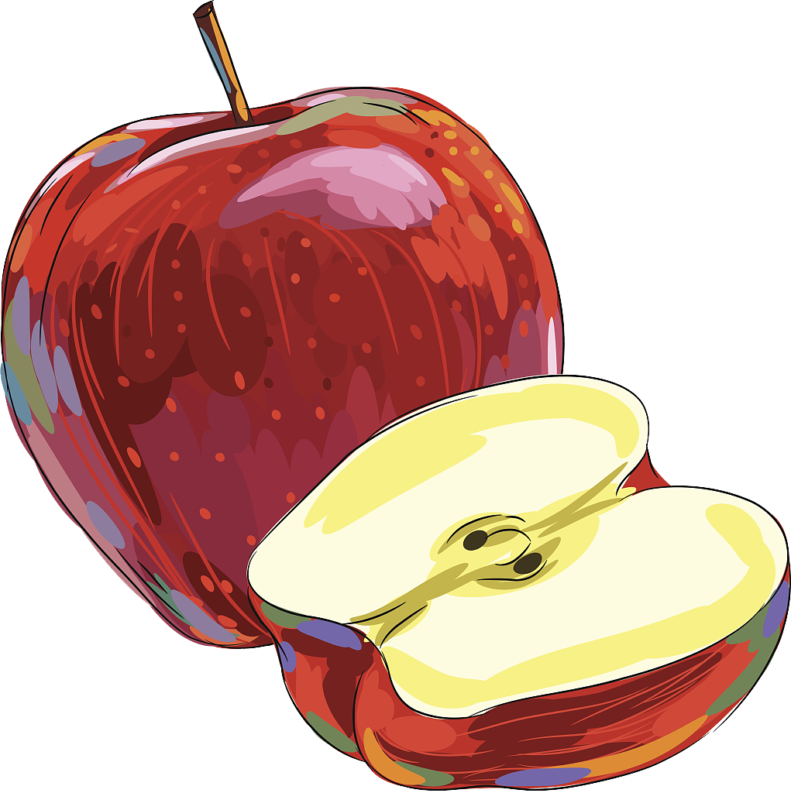
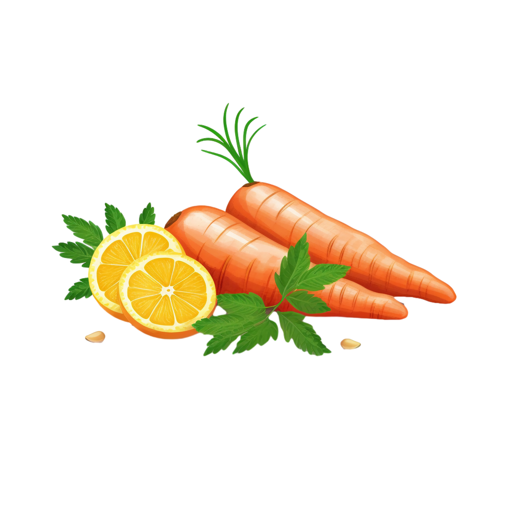

| Name |
Weight/Volume |
Description |
Ingredients |
Image |
| Apples |
1kg |
Fresh, crisp apples with a perfect balance of sweetness and tartness. Great for snacking, baking or making juice. Rich in fiber and vitamin C. |
100% fresh apples |
 |
| Carrots |
500g |
Fresh, crunchy carrots with bright orange color. Perfect for salads, cooking or juicing. High in beta-carotene and vitamin A. |
100% fresh carrots |
 |
| Bananas |
1 bunch (~1kg) |
Naturally sweet bananas at perfect ripeness. Great source of potassium and energy. Ideal for breakfast, smoothies or baking. |
100% fresh bananas |
 |